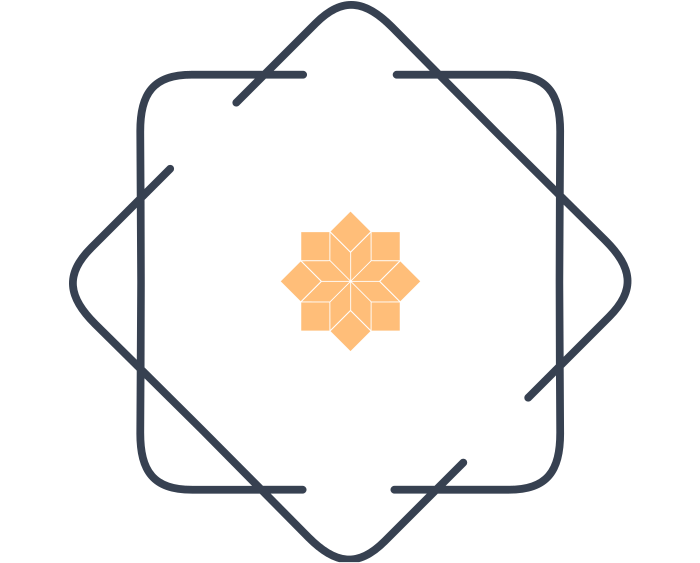

Wholydrops
Functional Fungamentals

Please scroll slowly for the full experience.
“What causes disease? Why does it come to some people who seem perfectly healthy, despite their best efforts to take care of themselves? Is good health just the absence of disease, or something greater?”
-Christopher Hobbs
In 2018, our interest in herbalism and natural health led us to begin researching how people have used fungi for healing and health in different cultures around the world. We also started combing the scientific literature for studies that might show the ways in which fungi affect our nutrition, metabolism, and immunity. This latter idea really struck us.
HealingFungi
Fungi are medicinal because they affect our nutrition, metabolism, and
immunity. Mushrooms and fungi could activate many aspects of our
immune response, whose fundamental purpose is to protect us from
pathogenic types of viruses and bacteria.
Fungi interact with our body to activate global immune responses, help
calm our nervous system, benefit our cardiovascular system, and
protect us from toxins and stresses in our environment, all the while
supplying important nutrients.
Safe & AntibacterialPowerful Antioxidants
Medicinal fungi can be powerful allies when used as part of a total
program for health. Because medicinal fungi are so safe, they are well
worth adding to any healing program; they are extremely helpful for
increasing and activating the immune response against pathogens,
perhaps even fighting cancer, as well as relieving the side effects of
conventional cancer treatments such as chemotherapy.
BETAGLUCANS
Some of the components that make up the fiber in fungi help modulate
the immune system — the fiber in the cell walls of all fungi is partly
composed of glucans, which are long chains of glucose molecules (and a
type of polysaccharide) that are often indigestible to humans. This
includes insoluble and soluble branched beta-glucans, branched
alpha-glucans, and chitin; these are “prebiotics” that are not
digested and absorbed from the upper digestive tract but make it down
mostly intact to the colon to feed beneficial bacteria.
This is
why we recommend shaking the bottle well before use.
Immunomodulation
Research over the last few decades, and especially in the past 5 to 10
years, has clearly shown the significant effect fungal beta-glucans
have on the immune system — for cancer treatment; to increase our
resistance to viral, bacterial, and even fungal infections; and for
restoration of damaged bone marrow, where immune stem cells that can
replenish and “reboot” our immune system are produced.
A tremendous worldwide research effort has demonstrated that fungal
beta-glucans work as an immunomodulating agent through the activation
of innate immune cells such as macrophages, dendritic cells,
granulocytes, and natural killer cells.
fung-tionaltincture
A mushroom tincture is a concentrated liquid extract that's made by
soaking dried mushrooms, from a variety of mushroom species, such as
reishi, lion's mane, and chaga in a solvent—typically alcohol and/or
water. This process unlocks the active ingredients in the mushrooms,
leaving you with a potent liquid that can be dosed with a pipette.
The beneficial compounds from the mushrooms such as beta-glucans,
polysaccharides, and triterpenoids that support immune function,
cognitive health, and overall wellbeing are concentrated into the
tincture.
DoubleExtraction
Hot Water to Release the Active Compounds + Alcohol to capture the
non-water soluble compounds(terpenes & triterpenes)
In order to access the active compounds in fungal cell walls, we must
heat mushrooms before consuming them. Alcohol is a great solvent for
extracting and preserving the low-molecular-weight compounds such as
the diterpenes in lion’s mane and the triterpenes in reishi.
We understand that sourcing functional mushrooms can be difficult,
which is why we prioritize quality in every step of our process. We
only use the lab-tested mushrooms and follow strict standards for
extraction to ensure our products are effective and potent.
fung-tionalConcentrate
For over five thousand years, mushrooms have been used as an effective
medicine. Now, researchers are rediscovering the amazing value of
these traditional medicinals as well as uncovering new
benefits--benefits that can safely and naturally improve your health
and well-being.
Tinctures are handy to carry and have a long shelf life. And because
tincturing is a cold-extraction process, it captures somewhat more of
the low-molecular-weight active molecules — diterpenes, triterpenes,
and phenolic compounds such as antioxidants.
Our goal is to make a portable, shelf-stable product that captures the
diterpenes in lion’s mane for nervous system and mood benefits, or the
triterpenes in reishi to support the respiratory tract and nervous
system.
Extracts
Medicinal mushrooms can be consumed regularly for a very long time —
up to two years or more. Although there is no clinical research to
support the idea that the immune system “habituates” or adjusts to
mushrooms (thereby reducing their efficacy), common sense dictates
that it could be beneficial to switch species every few months so the
body is exposed to beta-glucans with varying structures — especially
if the original supplement appears to be less effective over time. For
example, if you use turkey tails or reishi, switch to shiitake,
maitake, chaga, lion’s mane, agaricus because they offer different
immunologically active compounds, such as structurally different
beta-glucans, that could affect your immune response in different
ways.
Your body is working 10X hard than it used to.
Our lives are designed for burnout.
Before there were pills & injections, there were…Tinctures.
OurExtracts
Empower your health and wellbeing with natural functional mushroom
extracts from Wholy Drops. Our high-quality supplements are carefully
sourced and extracted for maximum effectiveness.
BE WARY OFMIRACLE CURES
In our experience, medicinal fungi can be powerful allies when used as
part of a total program for health. Because medicinal fungi are so
safe, they are well worth adding to any healing program; they are
extremely helpful for increasing and activating the immune response
against pathogens, perhaps even fighting cancer, as well as relieving
the side effects of conventional cancer treatments such as
chemotherapy. I have recommended them to my patients and used them
myself for over 30 years.
However, considering all the many factors outside of our control that
influence our health and the progression of disease, it’s unwise to
think of any remedy as a magic bullet. Taking a variety of different
treatments, undergoing counseling, and following new health habits
create a series of complex interactions that would be difficult for
any single therapy to address completely. Cancer, for example, is a
set of complex metabolic diseases, and the response by our immune
system to any disease is equally complex. This is something to keep in
mind when considering the advertising claims of commercial products.
DISCLAIMER
The following recommendations are for educational and health-promoting
use only and not meant to be a prescription for any disease or medical
advice. If you are experiencing symptoms, we always recommend
contacting a qualified health practitioner or physician for a
diagnosis and total health program.
We encourage the use of natural products and whole herbal extracts as
the most effective way to support the long clinical use and history of
use of many mushroom medicines.
BOOST IMMUNITY. IMPROVE MEMORY. FIGHT CANCER. STOP INFECTION. EXPAND
YOUR CONSCIOUSNESS.